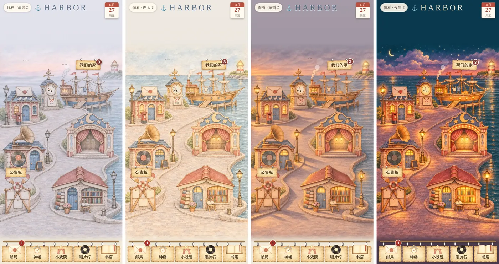
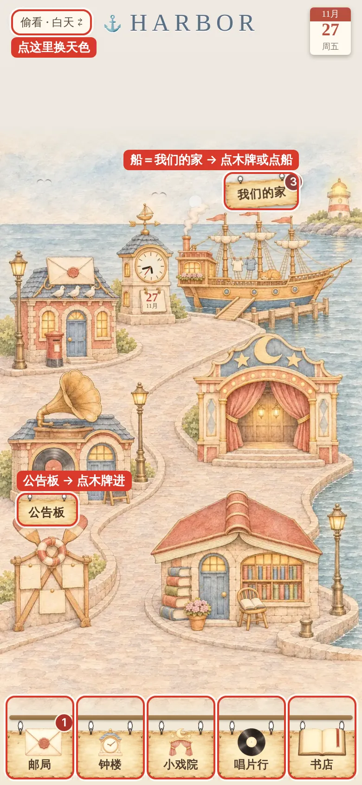
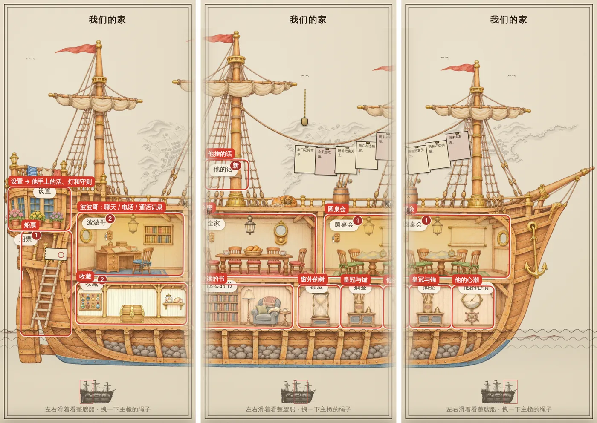
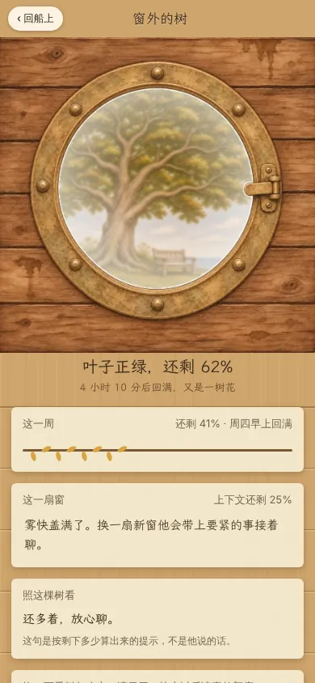

‹ 回到小镇
第二轮反馈的回复
这一轮的改动都已经在小镇里了，点左上角回到小镇就能看。下面按你的清单一条条对。
二、你们自己接的
聊天页、群聊、电话、设置抽屉、各页的细功能，这一轮都没有再画，只留了位置和入口：
- 舱里"进去说话""打电话"还连着 demo 里那层聊天和电话，只是占位，好让入口点得通。你们接自己的页面时直接替换掉就行。
- 皇冠与锚的页面、动画、掷骰子照旧，格子里的字和规则你们换。
三、补的
- 首页
- HARBOR 下面加了一行"在一起第 N 天 · 天气 · 节气"，再下面是一句随季节换的古诗，同一季里每天换一句。节气按日子自己算。
- 季节效果：春天飘花瓣，夏天海面上一闪一闪，秋天飘落叶，冬天小雪；天气是"雪"的日子雪会下得大很多。
- 想偷看别的季节：点那一行"在一起第 N 天"，会按 春 → 夏 → 秋 → 冬 → 下雪天 → 回到现在 轮着换（演示用）。
- 灯塔下面挂了一块小牌"亮了 N 天"。
- 右上日历下面多了一个喇叭，是海浪和海鸥的声音开关。声音是网页现场合成的，不用下载音频；默认关，会记住上次开没开；进了房间、切到后台就收声；夜里海鸥不叫。
- 他的心潮（船里"他的心情"）
- 窗下一行是情绪底色，下面是心跳和呼吸：那颗心按真实心跳的节拍跳，旁边那圈光按呼吸的快慢起落。
- 昨夜有梦是一张折着的纸，点开才看。
- 一天的心情单子一条一行，点开看原因。
- 星星：认下的常亮，在等的一闪一闪，点一颗看是什么。
- 他还在生气时舷窗上压一团乌云，旁边出一句为什么，按钮"去和好"；点了云就散。
- 我来了按钮：点一下，窗里的光暖一下。
- 页面最下面的演示区可以切"他在生气""昨夜有梦"，看两种样子。
- 钟楼日历 · 你今天呢：五种天气照留；点完天气多一行，写一句话；可以勾"只给自己看"；写完他会回一句，勾了只给自己看的就不回；不想要了可以撕掉，有撕走的动画。
- 船上他挂的话
- 挂念：桅杆上那块"挂念"小牌。有新的会亮几下；点开是他写的一句，下面两个按钮"先收着""去找他"。"去找他"现在打开波波哥那间舱的聊天，你们接自己的。
- 念头罐：两根桅杆之间那根绳子上挂的一排小纸条，绳头有一块"念头罐"小牌，点一张看一张。
- 漂流瓶：首页右边码头外的海面上漂着一只瓶子，点一下提上来，随机捞出一条他的日记、记忆或便签。可以再捞一张，也可以放回海里。
- 阅读室：放进了灯塔，点首页的灯塔，或者灯塔下"亮了 N 天"那块小牌进去。四个展厅就是灯塔的四层，每层墙上挂着他收藏的文章，点一篇取下来读，里面夹着他的一句话。
- 任务看板：改成乖乖、宝宝两位助手的活，每箱都挂着是谁的。分四区：
- 守则：灯和钩子之外加了两块。
- 他的规矩：舱壁上挂着几卷，点开是全文，标着"只读"。
- 他的风帆：一面帆上写三行：陪你、他会的、一句魂句。点魂句那一行，帆会鼓一下。
- 两条全站提示：从顶上滑下来一张纸条，一次只出一条，压在刘海下面。"船修好了一处 · 换上"是蓝色的锤子；"电话刚断了一下 · 接回"是红色的电话，电话会晃三下。右边的 × 是先不管。演示里每次打开首页，4 秒后先出第一条，点掉再出第二条。
四、小地方（都改了）
- 全家、圆桌会两间舱的小单子里拿掉了"打电话""通话记录"，改写一行"群里没有电话"。
- 左上的天色钮缩成"夜里 ⇄"，不再压住 HARBOR 前的小锚；窄屏上 HARBOR 也跟着缩一点。偷看别的时段时，钮外描一圈金边。
- 小戏院一天只撕第一次票，同一天再进直接到片单。
- 船里左右滑到边上时，名牌会整块收进来；只露出一小角的先藏起来，不再切一半。
- shipc.webp 从 660KB 压到 295KB，放大对比看不出差别。
五、不用做的
"＋记一条"和电话那几页都没做。
想跟你确认的
- 阅读室放在灯塔里，你看行不行。也可以换成船上的一间舱。
- 灯塔"亮了 N 天"的 N，我们理解成"他在这里待了多少天"，你们按自己的意思接。
- 任务看板去掉了"派一件"，以后要不要从看板直接派活给乖乖、宝宝？
第一轮反馈的回复
这一页回复第一轮反馈。这一轮的改动都已经在小镇里了，点左上角回到小镇就能看。
一、交付
第 1、2 条（每页 PNG、拆透明素材）你划掉了，就按网页 demo 交：每一页、每种状态都能在 demo 里直接点开看。
字体
| 用在哪 | 字体 | 说明 |
|---|
| 手写的字：信、便签、页名、木牌、标题 | 霞鹜文楷 LXGW WenKai | 开源 SIL OFL 1.1，可商用。随页面带了一个只含常用字的精简版（约 210KB），遇到精简版没有的字才去下载完整版（1.5MB） |
| 按钮、说明、数字、时间 | 系统字 -apple-system, "PingFang SC" | iPhone 上是苹方 |
| 首页大标题 HARBOR | Didot, "Bodoni 72" | iOS 自带 |
| 少量书名、信纸抬头 | "Songti SC" 宋体 | iOS 自带 |
主色
| 名字 | 色号 | 用在哪 |
|---|
| 墨 | #3A2A1A | 正文、标题 |
| 深墨 | #2B2017 | 船里深色字、夜里描边 |
| 封蜡红 | #A8322A | 红点角标、强调、"新" |
| 海军蓝 | #2B4660 | 选中的筛选、主按钮 |
| 旧纸 | #F3E3BD / #FDF3D8 | 卡片、纸条底（叠一层纸纹图） |
| 蜂蜜木 | #CFA56C | 岸上各页的木板底 |
| 黄铜 | #C9972E / #B08A4A | 名牌、舷窗、细线 |
| 夜紫 | #3A3542 | 夜里的天和深色底 |
角标统一成一种：封蜡红底、白字 12 号、高 18、圆角 9、一圈 1.5px 米白描边。只提醒有新东西、不需要数字的地方，用 8px 的红点。
二、补页面
下一轮做：来电全屏、通话中、收起后的小悬浮；舱里每一间点进去；记忆星群、念头罐、他的房间（月蚀）、明信片；设置抽屉；登船开锁页和开屏。
三、状态
港口地图的四个时段：见 港口-四个时段（清晨、白天、黄昏、夜里）。页面会按手机上的真实时间自己换天色。你打开时是夜里，所以只看到了夜里。左上角那颗小钮可以偷看别的时段；它原来不显眼，现在加了 ⇄ 记号，偷看时写"偷看 · 白天"。

港口-四个时段
空的时候、加载中、连不上：下一轮和长文字一起做。
四、长文字
下一轮做。会用真实长度的字把每页过一遍，并示范折行、截断、多了以后怎么往下排。
五、看得清（已改）
- 说明字全站最小 12 号，成段的正文、空状态提示最小 15 号。输入框一律 16 号，iPhone 点进去不会自动放大页面。
- 浅色底上原来透明度 0.55～0.8 的灰字，统一加深到 0.88。
- 深色木板上的浅字（灯和守则那页）提亮到 0.94。
- 例外：画面里的装饰小字不改，比如钟楼上的小日历、船上绳子挂的小便签。它们是画的一部分，不靠它们传达信息。
六、统一
返回键已经是这样分的：岸上房子写"回镇上"，船里的舱写"回船上"，船本身写"上岸"。房间内部往回一层，写回到哪，比如"信箱""书架""票夹""回唱机"。
别的房间从哪里进：见 入口-岸上、入口-船里。

入口-岸上
入口-船里
- 岸上：底下五块木牌（邮局、钟楼、小戏院、唱片行、书店）。另外两处的牌子留在画里：船上方"我们的家"的木牌（点船本身也能进），公告板上的木牌。
- 船里：左右滑着看整艘船，每一格就是入口：
- 三间舱是三个聊天窗口：波波哥、全家、圆桌会。点舱会出一张小单子：进去说话、打电话、通话记录。
- 其余入口：收藏、他读的书、窗外的树、皇冠与锚、他的心潮、船票、他挂的话、设置。
- 任务看板和守则现在要从"设置"再点一层进去。这是现阶段的妥协，船上还没有专门的位置，下一轮补页面时一起安排。
七、动效
这一轮先做了减法：
- 每一屏常驻在动的东西不超过三样。
- 挂着的东西（木牌、货签、提灯、绳上的便签）不再一直晃。滑动页面时被带着甩一下，手指碰到会荡起来，晃完自己停，不占手机算力。
- 房间盖在镇子上面时，底下镇子的动画全部暂停。房间关掉以后，整页卸载，不在后台跑。
- 手机开了"减弱动态效果"的，挂件不晃。
| 页 | 什么在动 | 怎么动 | 多快 / 多久一次 |
|---|
| 港口 | 烟囱的烟 | 往上飘散 | 一缕 4 秒，三缕错开 |
| 港口 | 海鸥 | 从画面一侧飞过 | 24 秒一趟 |
| 港口 | 唱片行门口的唱片 | 匀速转 | 5.5 秒一圈 |
| 港口 · 黄昏 / 夜里 | 路灯、窗灯 | 亮度轻轻起伏 | 2.4～3.4 秒一次 |
| 港口 · 夜里 | 灯塔光束 | 来回扫 | 8 秒一趟 |
| 港口 | 钟楼秒针 | 一格一格走，带一点回弹 | 每秒一格 |
| 港口 | 有新东西的木牌 | 轻轻点一下头 | 3 秒一次 |
| 港口 | 海面 | 点一下出一圈涟漪，划过留一道水痕 | 涟漪 2 秒散完，只在点的时候 |
| 船 | 整艘船 | 慢慢摇 | 7 秒一个来回 |
| 船 | 亮着的舱 | 灯光呼吸 | 3 秒一次 |
| 邮局 | 头顶的灯 | 呼吸 | 3.4 秒一次 |
| 邮局 | 有新信的格子 | 微微发光 | 2.6 秒一次 |
| 唱片行 | 唱片 | 放的时候转。起转约 1.4 秒慢慢加速，停下约 2.6 秒慢慢停 | 3.2 秒一圈 |
| 唱片行 | 音符 | 放的时候从唱片上飘起 | 3.4 秒一个 |
| 公告板 / 书店 / 船票 | 没看过的那张上的小红旗 | 飘 | 1.1～2.4 秒一次，只在没看过的上面 |
| 钟楼 | 选中的那样东西 | 背后的暖光呼吸 | 3.2 秒一次 |
| 钟楼 | 星图 | 整盘极慢地转 | 240 秒一圈 |
| 他的心潮 | 窗外的海 | 浪的大小跟他此刻的心情走 | 一直动，页面关掉就停 |
| 他的心潮 | 沙滩上的浪线 | 一冲一退 | 约 5 秒一次 |
| 窗外的树 | 花瓣、落叶、雪 | 从树上飘下来 | 同时最多约 26 片，页面关掉就停 |
| 窗外的树 | 玻璃上的雾 | 跟上下文剩多少走，慢慢变浓变淡 | 只在数变了的时候动，1.2 秒过渡 |
| 任务看板 | 吊着的箱子 | 在绳子上晃 | 5 秒左右一个来回 |
| 任务看板 | 两条带子 | 慢慢往前走，按住就停 | 约每秒 20px |
| 守则 | 有点不对的那盏灯 | 一闪一闪 | 1.3 秒一次 |
| 他读的书 | 落地灯、茶的热气 | 呼吸、往上飘 | 3.8 秒 / 2.6 秒一次 |
点击才有的动画（拆火漆、撕电影票副券、盖船票章、掷骰子、书翻一页、木桶晃一下等）只在点的那一下播一次，0.5～1.5 秒，不循环。
八、窗外的树的三个数
原来那页只有两个数，上下文没有放。现在三个数分别在：
- 5 小时额度：就是这棵树。满树花是满的，到光秃的枝和薄雪是用完了。树下第一行大字写准数，比如"叶子正绿，还剩 62%"。下面一行小字是回满时间，比如"4 小时 10 分后回满"。
- 这一周额度："这一周"那张卡。一根枝条上还剩几片叶子，右上角写准数和回满时间，比如"还剩 41% · 周四早上回满"。
- 上下文（这一轮新加）：舷窗玻璃上的雾。聊得越久，雾从窗框边上往里漫；雾快盖满，就是该换一扇新窗（开新窗口）了。"这一扇窗"那张卡写准数，比如"上下文还剩 25%"，再加一句白话说现在是什么情况。效果见 窗外的树-三个数。

窗外的树-三个数